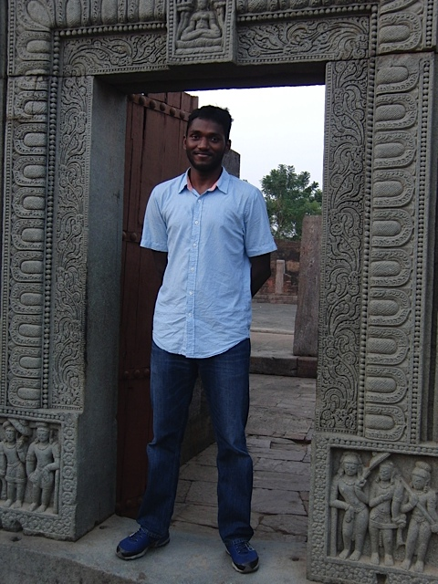

I am an assistant professor in the Department of Statistics at
University of Florida. Before coming to Gainesville, I was a Ph.D. student at Columbia University, New York. My Ph.D thesis advisor was Bodhisattva Sen.
My research centers around semiparametric/nonparametric methodology and large sample theory - efficient estimation in semiparametric models, nonparametric function estimation (with special emphasis on shape constrained estimation), likelihood and bootstrap based inference in (non-standard) parametric and nonparametric models. The main motivation of the research is in developing nonparametric procedures that are automated (free from tuning parameters) but still flexible enough to incorporate data-driven features.
My research has applications in broad areas such as genetics (multiple testing problems), economics (utility and production function estimation and binary response models), causal inference (conditional independence) and astronomy (analysis of accretion of galaxies), among other fields.
Outside of statistics, I enjoy playing tennis and hiking. I am originally from the city of Bhubaneswar in the state of Odisha, India. The photograph to the right is taken at one of the hundreds of Buddhist ruins in Odisha.

|